Airtable Automations
Detailed automation replication plan using screenshot evidence, field dependencies, idempotency, notification behavior, and validation gaps.
Source And Scope
Automation data comes from the Airtable automation screenshots captured from the client base. Airtable MCP CLI version 0.2.6 did not expose a tool for listing full automation definitions, and the direct metadata endpoint check did not return automation configuration.
Every visible automation appears to be switched OFF, and some action cards show warning indicators. Treat this as a future-phase workflow reference for intended behavior, not proof that the current Airtable automations are active, complete, or production requirements to copy exactly.
Software Building Blocks Needed
| Rule engine | Runs record-triggered rules when a source record is created or updated. |
|---|---|
| Scheduler | Runs tenant-scoped daily and weekly jobs in the tenant's configured timezone. |
| Task service | Creates and updates operational tasks from templates, compliance items, onboarding steps, and recurring task rules. |
| Notification service | Sends email notifications from templates and resolves recipients from tenant users, roles, stores, and notification groups. |
| KPI calculation service | Creates or updates KPI scorecard rows from financial periods and prescription metrics. |
| Audit and run logs | Stores automation runs, source records evaluated, outputs, skipped records, notifications, and errors. |
Cross-Cutting Rules
- Every automation must be scoped by tenant_id and, where applicable, pharmacy_id.
- Dates should be stored in UTC, while business schedules run in tenant timezone.
- Each scheduled job needs an idempotency key so re-runs do not create duplicate tasks or send duplicate emails.
- Record-triggered automations need an idempotency key based on source record and intended output.
- All recipients should be resolved from users, roles, or notification groups. Do not migrate hard-coded personal email addresses from Airtable.
- Each automation should support enabled, disabled, and dry_run modes per tenant.
- Automation failures should not block the user-facing workflow that created or updated the source record.
- Each automation should write run logs even when zero records are matched.
- Notification emails should avoid exposing unnecessary PHI.
Automation Inventory
| Automation | Screenshot | Confidence | Status | Trigger | Product intent |
|---|---|---|---|---|---|
| Copy Values from Financial Periods/Rx Metrics to KPI Scorecard | airtable-automation-01.png | Medium | OFF | When a record is created in Financial Periods. | When monthly financial data is entered or imported for a pharmacy, automatically prepare KPI scorecard records so dashboards can show revenue, margin, DIR fee, payroll, and prescription performance without manual copying. |
| New-Store Onboarding Auto-Clone | airtable-automation-02.png | Medium | OFF | When a record matches conditions. The source table is not visible, but intent suggests Pharmacies or Onboarding Steps. | When a pharmacy enters onboarding, clone a standard checklist of onboarding steps for that specific store. |
| Monday Owner Digest Email | airtable-automation-03.png | Medium | OFF | Every week on Monday at 5:15 PM IST. | Send owners a weekly summary of operational risk, compliance risk, task backlog, KPI exceptions, and expiring business records. |
| KPI Status Alert and Notification | airtable-automation-04.png | Medium | OFF | When a record matches conditions where Status is Off Track. | Alert the operations team when a KPI becomes off track so the issue can be reviewed before the next owner digest. |
| Doctor Office Follow-Up Notification | airtable-automation-05.png | Medium | OFF | When a record matches conditions where Next Follow-up is today. | Remind the assigned representative to follow up with a doctor office on the scheduled follow-up date. |
| Lapse Risk Alert Automation | airtable-automation-06.png | Medium | OFF | When a record matches conditions where Lapse Risk is At Risk. | Alert the assigned representative or manager when a doctor office relationship is at risk of lapsing. |
| Compliance to Unified Calendar Feed | airtable-automation-07.png | High | OFF | When a record is created in Compliance Items. | Every compliance requirement should become a trackable task/calendar item so it appears in operational views and reminders. |
| Scheduled Task Generation from Templates | airtable-automation-08.png | Medium | OFF | Every day at 11:30 AM IST. | Generate routine operational tasks from reusable task templates. |
| Compliance due soon notification | airtable-automation-09.png | Medium | OFF | Every day at 12:30 PM IST. | Notify responsible users when compliance requirements are due soon or due now. |
| Document/license expiring - weekly | airtable-automation-10.png | Medium | OFF | Every week on Monday at 12:30 PM IST. | Give owners/operators a weekly view of expiring business-critical documents, employee licenses, and vendor contracts. |
| Task overdue - daily notification | airtable-automation-11.png | Medium | OFF | Every day at 12:30 PM IST. | Remind assignees or managers about tasks that are past due and still open. |
| Recurring Task Generator | airtable-automation-12.png | Medium | OFF | When a task record matches conditions where Status is Done and Recurrence is set. | When a recurring task is completed, create the next instance automatically. |
| Task Completion Update | airtable-automation-13.png | Low | OFF | When a task record matches conditions where Status is Done. | Ambiguous. It may normalize task status, stamp completion metadata, or update a related task/status field. |
| Daily Task Due Email Notification | airtable-automation-14.png | Medium | OFF | Every day at 2:30 PM IST. | Remind assigned users about tasks due today. |


Copy Values from Financial Periods/Rx Metrics to KPI Scorecard Medium
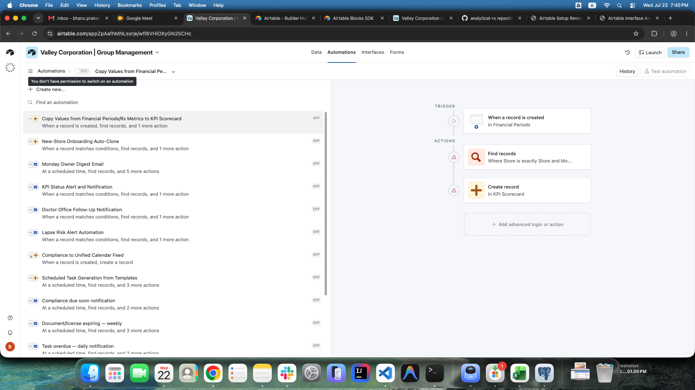
| Observed status | OFF |
|---|---|
| Observed trigger | When a record is created in Financial Periods. |
| Observed actions | Find matching Rx Metrics records using Store and Month, then create a KPI Scorecard record. The exact target field mapping is not visible. |
| Product intent | When monthly financial data is entered or imported for a pharmacy, automatically prepare KPI scorecard records so dashboards can show revenue, margin, DIR fee, payroll, and prescription performance without manual copying. |
| Primary tables | Financial Periods, Rx Metrics, KPI Scorecard, Pharmacies |
| Backend trigger type | Record-created event plus a manual re-sync button for a month/store. Later, update-triggered recalculation should also be supported. |
| Suggested idempotency key | tenant_id + pharmacy_id + month + kpi_name. Use upsert, not blind insert. |
Likely Field Mapping / Logic
- Monthly Revenue: Financial Periods.Total Revenue or sum of revenue fields.
- Rx Volume: likely Rx Metrics.New Rx + Rx Metrics.Refills. Confirm exact meaning.
- Gross Margin %: Financial Periods.Gross Margin %.
- EBITDA Margin %: likely Financial Periods.EBITDA / Financial Periods.Total Revenue.
- Payroll % of Revenue: likely Financial Periods.Payroll / Financial Periods.Total Revenue.
- DIR Fees %: likely Financial Periods.DIR Fees / Financial Periods.Total Revenue or Rx Metrics.DIR Fees / Rx Revenue. Confirm denominator.
- New Rx Patients: not directly present. Rx Metrics.New Rx may not mean unique new patients.
- New Active Offices: may require Doctor Offices data, not Financial Periods/Rx Metrics.
Implementation Details
- Load the related pharmacy and month when a financial period is created.
- Find matching Rx Metrics by same tenant, pharmacy, and month.
- Create or update one KPI Scorecard row per KPI definition unless the client confirms Airtable only uses one generic row.
- Calculate Actual, Target, Variance, Variance %, Status, Prior Period Actual, and Growth % in backend code or database logic.
- If matching Rx Metrics is missing, create financial-only KPI rows and log missing Rx dependencies, or skip Rx-dependent KPIs based on product decision.
- Keep formula ownership in the application, not in the dashboard layer.
Validation Needed
- Exact Airtable create-record field mapping for KPI Scorecard.
- Whether the automation creates one KPI row or multiple KPI rows per month/store.
- Target values and thresholds for On Track, Needs Attention, and Off Track.
- Whether updates to Financial Periods or Rx Metrics should re-run the sync.
New-Store Onboarding Auto-Clone Medium
| Observed status | OFF |
|---|---|
| Observed trigger | When a record matches conditions. The source table is not visible, but intent suggests Pharmacies or Onboarding Steps. |
| Observed actions | Find records where New Store is empty, repeat for each record, then create records in Onboarding Steps. |
| Product intent | When a pharmacy enters onboarding, clone a standard checklist of onboarding steps for that specific store. |
| Primary tables | Pharmacies, Onboarding Steps, People |
| Backend trigger type | Record-created or status-changed rule on pharmacy/store. Clean trigger: pharmacy status changes to Onboarding. |
| Suggested idempotency key | tenant_id + pharmacy_id + onboarding_template_id, or tenant_id + pharmacy_id + step_title + sequence. |
Likely Field Mapping / Logic
- Onboarding Steps.Step Title copies from template step title.
- Onboarding Steps.New Store links to the newly onboarding pharmacy.
- Category, Sequence, Document, and Notes copy from the template row.
- Status defaults to Not Started.
- Assignee should resolve from role/store rules.
- Due Date should be calculated from onboarding start date plus an offset; current Airtable table does not expose a clear offset field.
Implementation Details
- Separate reusable onboarding templates from generated store-specific onboarding steps.
- Provide a manual Generate onboarding checklist action in addition to the automatic trigger.
- Prevent duplicate checklist generation for the same store/template version.
- Log skipped templates when no responsible user can be resolved.
- Allow admins to regenerate missing steps without deleting completed steps.
Validation Needed
- Exact source table and trigger condition.
- How template rows are identified today. New Store is empty appears to be the template marker.
- Whether due dates are copied, calculated, or manually filled after clone.
- Whether onboarding applies to all pharmacies or only pharmacies with status Onboarding.
Monday Owner Digest Email Medium
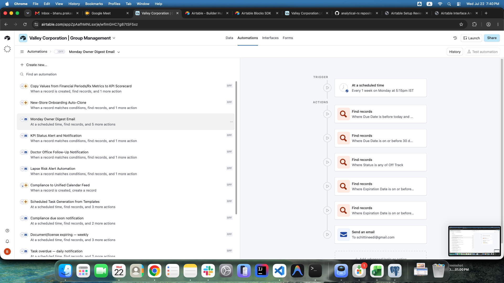
| Observed status | OFF |
|---|---|
| Observed trigger | Every week on Monday at 5:15 PM IST. |
| Observed actions | Five find-record actions followed by a send-email action. Visible searches include overdue tasks, upcoming due items, off-track KPI records, and expiration records. |
| Product intent | Send owners a weekly summary of operational risk, compliance risk, task backlog, KPI exceptions, and expiring business records. |
| Primary tables | Tasks, Compliance Items, KPI Scorecard, Documents, Employee Licenses, Vendors, People, Pharmacies |
| Backend trigger type | Weekly scheduled tenant job. |
| Suggested idempotency key | tenant_id + automation_key + monday_date + recipient_user_id. |
Likely Field Mapping / Logic
- Overdue tasks: Due Date before today and status not complete/cancelled.
- Upcoming tasks or compliance items: records due within the configured upcoming window. Screenshot appears to show a 30-day condition, but it is truncated.
- Off-track KPIs: KPI Scorecard rows where Status is Off Track.
- Expiring documents: Documents where Expiration Date is within the configured threshold.
- Expiring employee licenses: Employee Licenses where Expiration Date is within the configured threshold.
- Expiring vendor contracts: Vendors where Contract End is within the configured threshold.
Implementation Details
- Generate one digest per tenant, or one per owner/admin if owners only manage certain stores.
- Group results by store and then by category.
- Include counts and top urgent items in the email body. Link each item back to the app.
- Store rendered digest metadata in notification history for audit and resend.
- Do not send empty digests unless the client wants a nothing-due confirmation.
- Use a configurable tenant timezone and send time. Do not hard-code IST.
Validation Needed
- Exact five Airtable find-record queries.
- Email subject/body and whether the owner digest is one email or multiple emails.
- Who should receive it: owner/admins, operations managers, bookkeepers, store managers, or another group.
- Whether the digest should include all stores or only stores assigned to each recipient.
KPI Status Alert and Notification Medium
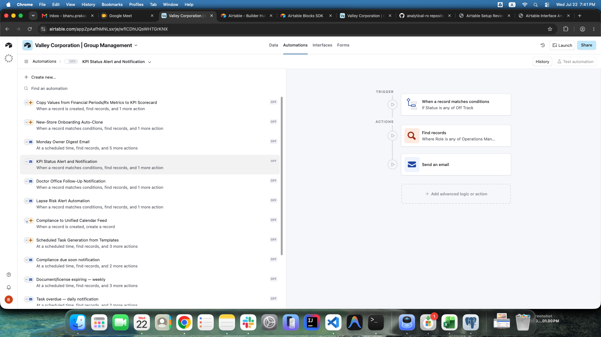
| Observed status | OFF |
|---|---|
| Observed trigger | When a record matches conditions where Status is Off Track. |
| Observed actions | Find people where Role is Operations Manager, then send an email. |
| Product intent | Alert the operations team when a KPI becomes off track so the issue can be reviewed before the next owner digest. |
| Primary tables | KPI Scorecard, People, Pharmacies |
| Backend trigger type | Record state-change rule on KPI Scorecard status. |
| Suggested idempotency key | tenant_id + kpi_scorecard_id + status + status_changed_at_date + recipient_user_id. |
Likely Field Mapping / Logic
- Recipient lookup: People.Role includes Operations Manager.
- Alert context: KPI, Store, Month, Actual, Target, Variance, Variance %, Status.
Implementation Details
- Trigger only on transition into Off Track, not on every save while already off track.
- Resolve recipients by role and store visibility.
- Include KPI name, store, month, actual, target, variance, and dashboard link.
- Throttle notifications so one bad import does not send many duplicate emails.
- Add alert history on the KPI record or in a notification log.
Validation Needed
- Whether Needs Attention should also notify or only Off Track.
- Whether alerts go to operations managers, owners, store managers, or all of them.
- Whether the Airtable warning icon means the recipient lookup is currently broken.
Doctor Office Follow-Up Notification Medium
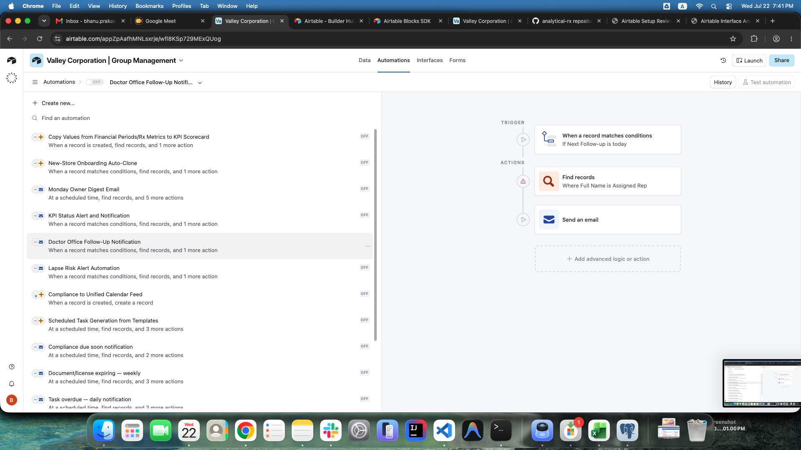
| Observed status | OFF |
|---|---|
| Observed trigger | When a record matches conditions where Next Follow-up is today. |
| Observed actions | Find a person where Full Name matches Assigned Rep, then send an email. |
| Product intent | Remind the assigned representative to follow up with a doctor office on the scheduled follow-up date. |
| Primary tables | Doctor Offices, Doctor Visits, People, Pharmacies |
| Backend trigger type | Daily scheduled reminder or record state rule. Scheduled reminder is safer for date-based triggers. |
| Suggested idempotency key | tenant_id + doctor_office_id + follow_up_date + recipient_user_id. |
Likely Field Mapping / Logic
- Doctor Offices.Assigned Rep should become a user/person reference, not a string name match.
- Reminder context: office name, doctor name, specialty, store, last visit date, next action, next follow-up.
Implementation Details
- Send only when Next Follow-up equals today in tenant timezone.
- After a visit is logged, update the office's next follow-up date from the Doctor Visit record.
- Track notification history so repeated same-day reminders do not spam the representative.
- Support escalation if follow-up becomes overdue.
Validation Needed
- Whether the source record is Doctor Offices or Doctor Visits.
- Whether reminders send at start of day, exact time, or immediately when Next Follow-up becomes today.
- Whether reminders should also notify a manager if overdue.
Lapse Risk Alert Automation Medium
| Observed status | OFF |
|---|---|
| Observed trigger | When a record matches conditions where Lapse Risk is At Risk. |
| Observed actions | Find records related to Assigned Rep, then send an email. The find-record label is truncated and ambiguous. |
| Product intent | Alert the assigned representative or manager when a doctor office relationship is at risk of lapsing. |
| Primary tables | Doctor Offices, Doctor Visits, People, Tasks |
| Backend trigger type | Record state-change rule on Doctor Office lapse risk plus a scheduled daily reconciliation job to catch formula-derived changes. |
| Suggested idempotency key | tenant_id + doctor_office_id + lapse_risk_status + recipient_user_id + alert_period. |
Likely Field Mapping / Logic
- Likely risk inputs: Last Visit Date, Days Since Last Visit, Lapse Risk, Assigned Rep, Est Monthly Rx.
- Recipient lookup: assigned rep and optionally store manager or operations manager.
Implementation Details
- Define lapse risk explicitly in software instead of relying on hidden Airtable formulas.
- Trigger only when risk moves from normal to At Risk, or once per configured reminder period while still at risk.
- Email should include office, doctor, store, last visit date, days since last visit, estimated monthly Rx, and next recommended action.
- Consider creating a follow-up task automatically if no open task already exists.
Validation Needed
- Exact formula for Lapse Risk.
- Whether alert recipients are assigned reps, managers, or both.
- Whether an automatic task should be created or only email should be sent.
- Whether the warning icon indicates a broken recipient lookup.
Compliance to Unified Calendar Feed High
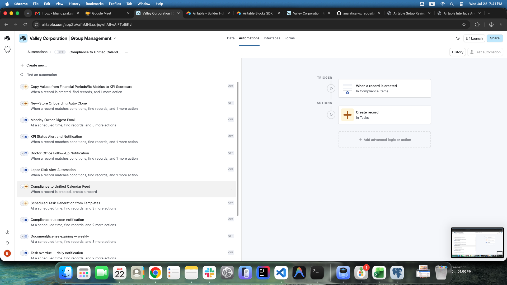
| Observed status | OFF |
|---|---|
| Observed trigger | When a record is created in Compliance Items. |
| Observed actions | Create a record in Tasks. |
| Product intent | Every compliance requirement should become a trackable task/calendar item so it appears in operational views and reminders. |
| Primary tables | Compliance Items, Tasks, People, Pharmacies |
| Backend trigger type | Record-created rule on Compliance Items. |
| Suggested idempotency key | tenant_id + compliance_item_id + task_source. |
Likely Field Mapping / Logic
- Tasks.Title: Compliance Items.Requirement.
- Tasks.Description: issuing authority, license number, renewal lead time, cost, and notes when present.
- Tasks.Store: Compliance Items.Store.
- Tasks.Category: Compliance.
- Tasks.Priority: default based on due date or category.
- Tasks.Status: Open or To Do. We should choose one canonical status.
- Tasks.Assignee: Compliance Items.Owner.
- Tasks.Due Date: Compliance Items.Due Date.
- Tasks.Recurrence: Compliance Items.Frequency.
- Tasks.Source: Compliance.
Implementation Details
- Create the compliance task immediately after compliance item creation.
- If owner is empty, route to a tenant compliance admin queue instead of failing silently.
- When the compliance item due date changes, decide whether to update the linked task due date.
- Keep a direct source reference from task to compliance item.
Validation Needed
- Exact Airtable field mappings for created task.
- Whether a compliance item creates one task only or recurring future tasks too.
- Whether this feeds an actual calendar integration or just Airtable task dashboards.
Scheduled Task Generation from Templates Medium
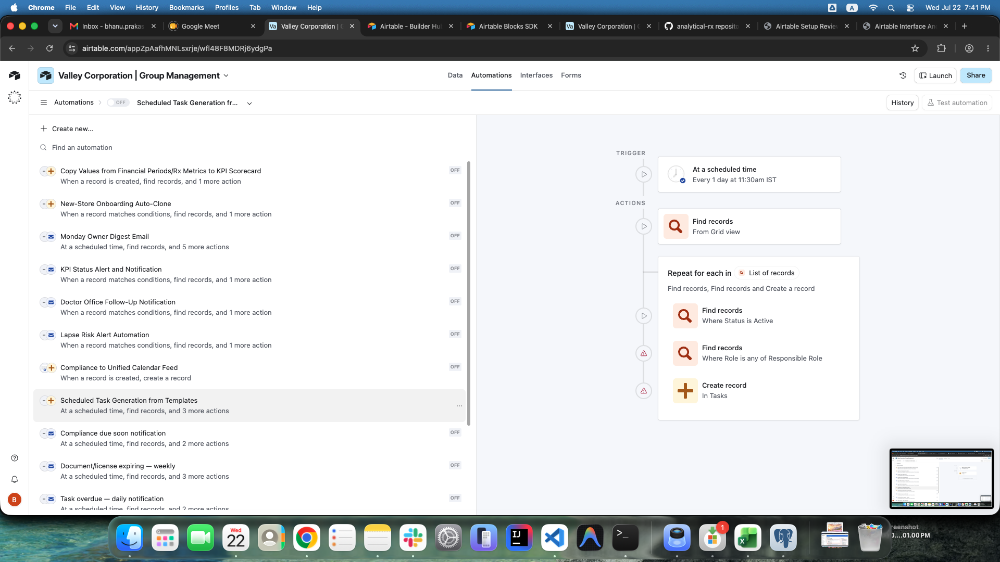
| Observed status | OFF |
|---|---|
| Observed trigger | Every day at 11:30 AM IST. |
| Observed actions | Find task templates from a grid view, repeat over each record, find active stores, find people by responsible role, then create records in Tasks. |
| Product intent | Generate routine operational tasks from reusable task templates. |
| Primary tables | Task Templates, Tasks, Pharmacies, People |
| Backend trigger type | Daily scheduled tenant job. |
| Suggested idempotency key | tenant_id + template_id + pharmacy_id + scheduled_period_start. |
Likely Field Mapping / Logic
- Process templates where Template Active is checked.
- If Store Scope is All Stores, generate one task per active pharmacy.
- Resolve assignee by Responsible Role and store assignment.
- Calculate due date as scheduled date plus Days Offset.
- Set task title, description, category, priority, recurrence/frequency, and source from the template.
Implementation Details
- Use a recurrence engine so daily/weekly/monthly/quarterly/annual templates generate in the correct period.
- Maintain a generated-task link back to the template.
- Before creating a task, check for an existing task for the same template, store, and period.
- If multiple users match the responsible role, assignment behavior needs product confirmation.
- If no user matches the responsible role, create the task unassigned and log a configuration warning.
Validation Needed
- Exact grid view used by Airtable's first find-record action.
- Whether the job runs daily but only creates tasks on frequency boundaries.
- Whether templates are global, tenant-specific, or store-specific.
- Exact behavior for missed runs and backfills.
Compliance due soon notification Medium
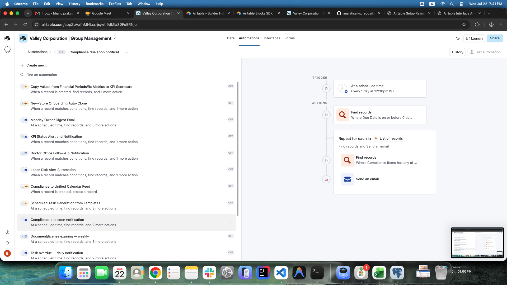
| Observed status | OFF |
|---|---|
| Observed trigger | Every day at 12:30 PM IST. |
| Observed actions | Find compliance records where due date is on or before a configured day threshold, repeat over records, find related owner/assignee records, then send an email. |
| Product intent | Notify responsible users when compliance requirements are due soon or due now. |
| Primary tables | Compliance Items, People, Pharmacies, Tasks |
| Backend trigger type | Daily scheduled tenant job. |
| Suggested idempotency key | tenant_id + compliance_item_id + due_date + reminder_stage + recipient_user_id. |
Likely Field Mapping / Logic
- Use Renewal Lead Time Days when present; otherwise use a tenant default.
- Include Requirement, Store, Category, Due Date, Owner, and item/task link.
- Exclude Completed and N/A statuses.
Implementation Details
- Send reminders for On Track, Due Soon, or Overdue records.
- Escalate overdue items after a configurable number of days.
- Update status to Due Soon or Overdue through a separate calculation rule if needed.
- Avoid duplicate emails for the same compliance item and reminder stage.
Validation Needed
- Exact due-soon threshold. Screenshot text is truncated.
- Whether notification goes to Compliance Item Owner, store manager, operations manager, or all.
- Whether compliance reminders should create tasks, send email only, or both.
Document/license expiring - weekly Medium
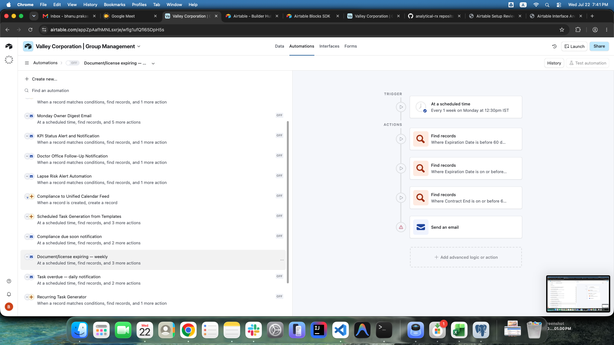
| Observed status | OFF |
|---|---|
| Observed trigger | Every week on Monday at 12:30 PM IST. |
| Observed actions | Find documents expiring before a 60-day threshold, find licenses expiring by another threshold, find vendor contracts ending by a threshold, then send an email. |
| Product intent | Give owners/operators a weekly view of expiring business-critical documents, employee licenses, and vendor contracts. |
| Primary tables | Documents, Employee Licenses, Vendors, People, Pharmacies |
| Backend trigger type | Weekly scheduled tenant job. |
| Suggested idempotency key | tenant_id + automation_key + monday_date + recipient_user_id. |
Likely Field Mapping / Logic
- Documents: Expiration Date and Permission Level.
- Employee Licenses: Expiration Date, License Type, Status, Employee.
- Vendors: Contract End, Vendor Name, Store, Auto-Renew, Annual Value.
Implementation Details
- Use configurable thresholds by record type.
- Group output by store and source table.
- Highlight expired records separately from expiring-soon records.
- Respect document permission level when linking records in email.
- Include auto-renew vendor contracts but clearly mark them.
- Consider creating renewal tasks automatically if the client wants enforcement, not just reminders.
Validation Needed
- Exact thresholds for each source table.
- Recipients and whether they vary by store.
- Whether document permissions affect who can receive links.
Task overdue - daily notification Medium
| Observed status | OFF |
|---|---|
| Observed trigger | Every day at 12:30 PM IST. |
| Observed actions | Find tasks where due date is before today and other status filters apply, repeat over each record, find assignee records, then send an email. |
| Product intent | Remind assignees or managers about tasks that are past due and still open. |
| Primary tables | Tasks, People, Pharmacies |
| Backend trigger type | Daily scheduled tenant job. |
| Suggested idempotency key | tenant_id + task_id + overdue_date + recipient_user_id. |
Likely Field Mapping / Logic
- Active statuses: likely Open, To Do, In Progress, and Blocked.
- Excluded statuses: Done, Completed, and Cancelled.
- Email context: title, store, category, priority, due date, overdue days, app link.
Implementation Details
- Send to assigned users first.
- Escalate to store manager or operations manager after a configured number of overdue days.
- Use notification history to avoid repeat emails more frequently than intended.
- For unassigned overdue tasks, route to store manager or operations queue.
Validation Needed
- Exact status filter in Airtable.
- Whether blocked tasks notify assignees, managers, or both.
- Whether reminders continue every day until completed.
Recurring Task Generator Medium
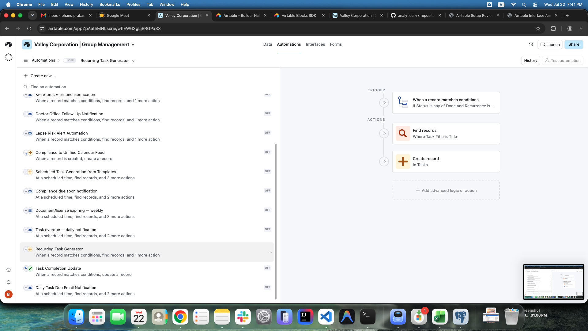
| Observed status | OFF |
|---|---|
| Observed trigger | When a task record matches conditions where Status is Done and Recurrence is set. |
| Observed actions | Find records where Task Title or Title matches, then create a record in Tasks. |
| Product intent | When a recurring task is completed, create the next instance automatically. |
| Primary tables | Tasks, Task Templates |
| Backend trigger type | Record state-change rule on Task completion. |
| Suggested idempotency key | tenant_id + completed_task_id + recurrence + next_due_date. |
Likely Field Mapping / Logic
- Daily: next due date is current due date plus 1 day.
- Weekly: next due date is current due date plus 1 week.
- Monthly: next due date is same day next month, with end-of-month handling.
- Quarterly: next due date is plus 3 months.
- Annual or Yearly: next due date is plus 1 year.
- Biennial: next due date is plus 2 years.
- One-time or None: do not generate a next task.
Implementation Details
- Trigger only once when task transitions into completed state.
- Copy title, description, store, category, priority, assignee, recurrence, source, and related links.
- Set new task status to Open or To Do.
- Do not copy proof-of-completion attachments to the next task unless requested.
- Link previous and next tasks so users can view recurrence history.
- Prevent duplicate next tasks if a completed task is edited again.
Validation Needed
- Whether Airtable finds a Task Template row or an existing Task row before creating the next task.
- Whether next due date is based on completed date or original due date.
- Whether recurrence stops after a configured end date or count.
Task Completion Update Low
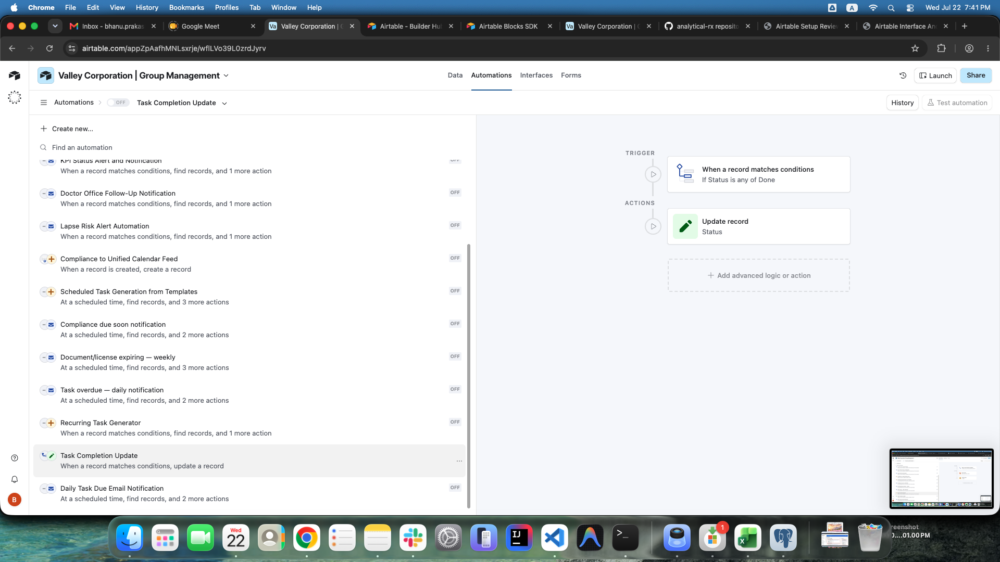
| Observed status | OFF |
|---|---|
| Observed trigger | When a task record matches conditions where Status is Done. |
| Observed actions | Update record: Status. The screenshot does not show the new value or any other field update. |
| Product intent | Ambiguous. It may normalize task status, stamp completion metadata, or update a related task/status field. |
| Primary tables | Tasks |
| Backend trigger type | Record state-change rule on Task status. |
| Suggested idempotency key | tenant_id + task_id + completion_status_transition. |
Likely Field Mapping / Logic
- If task is marked Done, set Completed At to current date/time if empty.
- If Airtable uses both Done and Completed, normalize to one canonical completed status.
- If a task has related tasks, confirm whether completing one task should update a parent or linked task.
Implementation Details
- Do not implement a rule that simply says when Status is Done, update Status without confirming the intended new value.
- Use a transition guard so the rule only fires when status changes from non-complete to complete.
- Write completion actor, completed timestamp, and source of update in audit logs.
Validation Needed
- Exact update-record field mapping.
- Whether the action sets Completed At, changes Done to Completed, or updates another linked record.
- Whether this automation overlaps with Recurring Task Generator.
Daily Task Due Email Notification Medium
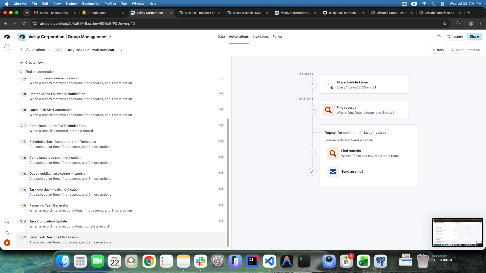
| Observed status | OFF |
|---|---|
| Observed trigger | Every day at 2:30 PM IST. |
| Observed actions | Find tasks where due date is today and status filters apply, repeat over each task, find assignee records, then send an email. |
| Product intent | Remind assigned users about tasks due today. |
| Primary tables | Tasks, People, Pharmacies |
| Backend trigger type | Daily scheduled tenant job. |
| Suggested idempotency key | tenant_id + task_id + due_date + recipient_user_id. |
Likely Field Mapping / Logic
- Find tasks where Due Date equals today in tenant timezone.
- Exclude completed/cancelled tasks.
- Send to assignees. If no assignee exists, route to store manager or operations queue.
- Email context: title, store, category, priority, due date, app link.
Implementation Details
- Do not send both due-today and overdue emails for the same task on the same day.
- Consider batching multiple due-today tasks for the same recipient into one email.
- Use configurable send time per tenant.
- Write delivery attempts and suppression decisions to notification history.
Validation Needed
- Exact status filter in Airtable.
- Whether notification should happen at 2:30 PM or earlier in the user's workday.
- Whether multiple tasks should be sent as one digest or one email per task.
Suggested Minimal Database Support
| automation_rules | Tenant-scoped rule configuration: key, name, trigger type, schedule, timezone, enabled flag, dry-run flag, and rule-specific JSON config. |
|---|---|
| automation_runs | One row per execution with start/end timestamps, status, matched count, created count, updated count, notification count, skipped count, and error summary. |
| automation_run_items | Optional detail rows per source record processed. Useful when a digest or scheduled job handles many records. |
| notification_templates | Tenant-scoped email templates for owner digest, KPI alert, follow-up reminder, due-soon reminder, overdue reminder, and due-today reminder. |
| notification_deliveries | Delivery log with recipient, subject, channel, source automation, source record, delivery status, provider message id, and sent timestamp. |
| role_notification_settings | Defines who receives each notification class by tenant, pharmacy, role, and notification type. |
Phase 1 Replication Priority
- Build task creation/update foundation first: Tasks, Task Templates, assignments, due dates, status transitions, and recurrence.
- Implement compliance-to-task creation because it is simple and high value.
- Implement due-today and overdue task reminders because they validate scheduler, recipient resolution, and notification logs.
- Implement scheduled task generation from templates after duplicate prevention is in place.
- Implement KPI scorecard sync after Financial Periods and Rx Metrics import paths are defined.
- Implement doctor-office follow-up and lapse-risk alerts after the doctor office module is modeled.
- Implement owner digest last because it aggregates many other modules and depends on their data quality.
Open Client Questions
- Which currently OFF Airtable automations are actually used by the business today?
- Can the client export or screen-share the detailed step configuration for each automation, including filters, field mappings, email bodies, and recipients?
- What timezone should production schedules use for each pharmacy group?
- Should reminders be one email per item or one batched digest per user?
- Which roles should receive owner/operator alerts, and should recipients vary by store?
- Should automations create tasks, send emails, or both for compliance and expiration workflows?
- What are the exact KPI formulas and target thresholds?
- Should task statuses be normalized? Airtable currently shows both Done and Completed.
- Should recurring tasks be based on original due date or actual completion date?
- Do any Airtable automations include scripts or integrations that are not visible in the screenshots?